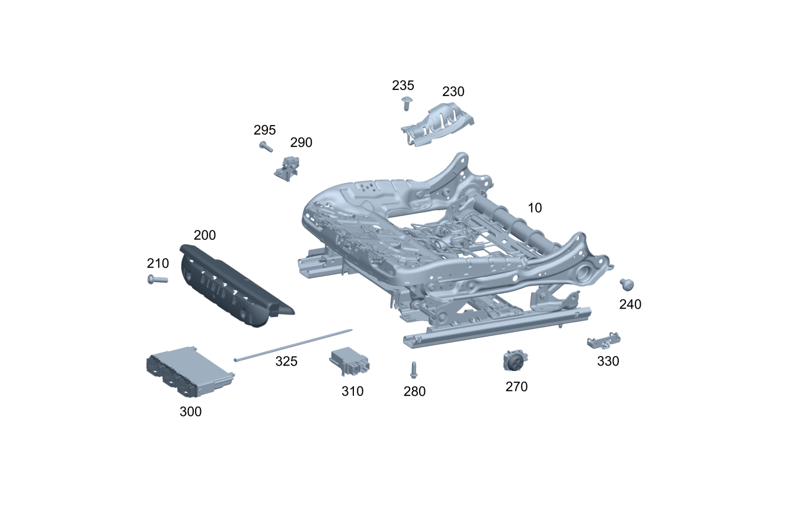

| № | Артикул | Название | Кол. | Примечание |
|---|---|---|---|---|
| 10 | A 000 910 26 12 | Регулировка сиденья (SITZEINSTELLUNG) | 1 | Механизм регулировки положения переднего сиденья слева |
| 10 | A 000 910 28 12 | Регулировка сиденья (SITZEINSTELLUNG) | 1 | Механизм регулировки положения переднего сиденья слева |
| 10 | A 000 910 28 12 | Регулировка сиденья (SITZEINSTELLUNG) | 1 | Механизм регулировки положения переднего сиденья слева |
| 10 | A 000 910 56 17 | Регулировка сид. по выс. (SITZHOEHENEINSTELLUNG) | 1 | Механизм регулировки положения переднего сиденья слева |
| 10 | A 000 910 28 12 | Регулировка сиденья (SITZEINSTELLUNG) | 1 | Механизм регулировки положения переднего сиденья слева |
| 10 | A 000 910 28 12 | Регулировка сиденья (SITZEINSTELLUNG) | 1 | Механизм регулировки положения переднего сиденья слева |
| 10 | A 000 910 56 17 | Регулировка сид. по выс. (SITZHOEHENEINSTELLUNG) | 1 | Механизм регулировки положения переднего сиденья слева |
| 10 | A 000 910 28 12 | Регулировка сиденья (SITZEINSTELLUNG) | 1 | Механизм регулировки положения переднего сиденья слева |
| 10 | A 000 910 28 12 | Регулировка сиденья (SITZEINSTELLUNG) | 1 | Механизм регулировки положения переднего сиденья слева |
| 10 | A 000 910 27 12 | Регулировка сиденья (SITZEINSTELLUNG) | 1 | Механизм регулировки положения переднего сиденья справа |
| 10 | A 000 910 29 12 | Регулировка сиденья (SITZEINSTELLUNG) | 1 | Механизм регулировки положения переднего сиденья справа |
| 10 | A 000 910 29 12 | Регулировка сиденья (SITZEINSTELLUNG) | 1 | Механизм регулировки положения переднего сиденья справа |
| 10 | A 000 910 57 17 | Регулировка сид. по выс. (SITZHOEHENEINSTELLUNG) | 1 | Механизм регулировки положения переднего сиденья справа |
| 10 | A 000 910 29 12 | Регулировка сиденья (SITZEINSTELLUNG) | 1 | Механизм регулировки положения переднего сиденья справа |
| 10 | A 000 910 29 12 | Регулировка сиденья (SITZEINSTELLUNG) | 1 | Механизм регулировки положения переднего сиденья справа |
| 10 | A 000 910 57 17 | Регулировка сид. по выс. (SITZHOEHENEINSTELLUNG) | 1 | Механизм регулировки положения переднего сиденья справа |
| 10 | A 000 910 29 12 | Регулировка сиденья (SITZEINSTELLUNG) | 1 | Механизм регулировки положения переднего сиденья справа |
| 10 | A 000 910 29 12 | Регулировка сиденья (SITZEINSTELLUNG) | 1 | Механизм регулировки положения переднего сиденья справа |
| 200 | A 167 910 38 04 | Прокладка (POLSTERPLATTE) | 1 | Механизм регулировки по высоте (левое сиденье) |
| 200 | A 167 910 38 04 | Прокладка (POLSTERPLATTE) | 1 | Механизм регулировки по высоте (левое сиденье) |
| 200 | A 167 910 38 04 | Прокладка (POLSTERPLATTE) | 1 | Механизм регулировки по высоте (левое сиденье) |
| 200 | A 167 910 38 04 | Прокладка (POLSTERPLATTE) | 1 | Механизм регулировки по высоте (левое сиденье) |
| 200 | A 167 910 38 04 | Прокладка (POLSTERPLATTE) | 1 | Механизм регулировки по высоте (правое сиденье) |
| 200 | A 167 910 38 04 | Прокладка (POLSTERPLATTE) | 1 | Механизм регулировки по высоте (правое сиденье) |
| 200 | A 167 910 38 04 | Прокладка (POLSTERPLATTE) | 1 | Механизм регулировки по высоте (правое сиденье) |
| 200 | A 167 910 38 04 | Прокладка (POLSTERPLATTE) | 1 | Механизм регулировки по высоте (правое сиденье) |
| 210 | A 001 984 65 29 | Болт с головкой торкс (SECHSRUNDSCHRAUBE) | 2 | Пластина основания обивки к механизму регулировки по высоте слева; 5X20 |
| 210 | A 001 984 65 29 | Болт с головкой торкс (SECHSRUNDSCHRAUBE) | 2 | Пластина основания обивки к механизму регулировки по высоте слева; 5X20 |
| 210 | A 001 984 65 29 | Болт с головкой торкс (SECHSRUNDSCHRAUBE) | 2 | Пластина основания обивки к механизму регулировки по высоте слева; 5X20 |
| 210 | A 001 984 65 29 | Болт с головкой торкс (SECHSRUNDSCHRAUBE) | 2 | Пластина основания обивки к механизму регулировки по высоте слева; 5X20 |
| 210 | A 001 984 65 29 | Болт с головкой торкс (SECHSRUNDSCHRAUBE) | 2 | Пластина основания обивки к механизму регулировки по высоте справа; 5X20 |
| 210 | A 001 984 65 29 | Болт с головкой торкс (SECHSRUNDSCHRAUBE) | 2 | Пластина основания обивки к механизму регулировки по высоте справа; 5X20 |
| 210 | A 001 984 65 29 | Болт с головкой торкс (SECHSRUNDSCHRAUBE) | 2 | Пластина основания обивки к механизму регулировки по высоте справа; 5X20 |
| 210 | A 001 984 65 29 | Болт с головкой торкс (SECHSRUNDSCHRAUBE) | 2 | Пластина основания обивки к механизму регулировки по высоте справа; 5X20 |
| 230 | A 205 821 35 89 | Кабелепровод (KABELFUEHRUNG) | 1 | Левое сиденье, изнутри |
| 230 | A 205 821 23 89 | Кабелепровод (KABELFUEHRUNG) | 1 | Левое сиденье, снаружи |
| 230 | A 205 821 36 89 | Кабелепровод (KABELFUEHRUNG) | 1 | Правое сиденье изнутри |
| 230 | A 205 821 24 89 | Кабелепровод (KABELFUEHRUNG) | 1 | Правое сиденье снаружи |
| 235 | A 000 990 54 92 | Заклепка | 2 | КРЕПЛЕНИЕ ЛЕВОГО КАБЕЛЬНОГО КАНАЛА; 6 MM |
| 235 | A 000 990 54 92 | Заклепка | 2 | КРЕПЛЕНИЕ ПРАВОГО КАБЕЛЬНОГО КАНАЛА; 6 MM |
| 240 | N 000000 002213 | Винт с 6-гр. глвк (SECHSRUNDSCHRAUBE) | 4 | Рама спинки к каркасу сиденья слева |
| 240 | N 000000 002213 | Винт с 6-гр. глвк (SECHSRUNDSCHRAUBE) | 4 | Рама спинки к каркасу сиденья справа |
| 270 | A 167 905 80 01 | Блок выключателей (SCHALTERBLOCK) | 1 | Левое сиденье |
| 270 | A 167 905 79 01 | Блок выключателей (SCHALTERBLOCK) | 1 | Правое сиденье |
| 280 | A 000 990 87 29 | Самонарезающий винт (GEWINDEFURCHENDE SCHRAUBE) | 4 | РЕГУЛИРОВКА СИДЕНЬЯ НА ПОЛУ, СЛЕВА; M10X32 |
| 280 | A 000 990 87 29 | Самонарезающий винт (GEWINDEFURCHENDE SCHRAUBE) | 4 | РЕГУЛИРОВКА СИДЕНЬЯ НА ПОЛУ, СПРАВА; M10X32 |
| 290 | A 205 905 18 03 | Датчик Холла (HALLSENSOR) | 1 | Механизм регулировки сиденья слева |
| 290 | A 205 905 18 03 | Датчик Холла (HALLSENSOR) | 1 | Механизм регулировки сиденья слева |
| 290 | A 205 905 18 03 | Датчик Холла (HALLSENSOR) | 1 | Механизм регулировки сиденья справа |
| 290 | A 205 905 18 03 | Датчик Холла (HALLSENSOR) | 1 | Механизм регулировки сиденья справа |
| 295 | A 001 984 65 29 | Болт с головкой торкс (SECHSRUNDSCHRAUBE) | 1 | Крепление сиденья слева; 5X20 |
| 295 | A 001 984 65 29 | Болт с головкой торкс (SECHSRUNDSCHRAUBE) | 1 | Крепление сиденья слева; 5X20 |
| 295 | A 001 984 65 29 | Болт с головкой торкс (SECHSRUNDSCHRAUBE) | 1 | Крепление сиденья справа; 5X20 |
| 295 | A 001 984 65 29 | Болт с головкой торкс (SECHSRUNDSCHRAUBE) | 1 | Крепление сиденья справа; 5X20 |
| 300 | A 213 900 30 13 | Блок управления (STEUERGERAET) | 1 | Механизм регулировки сиденья слева |
| 300 | A 213 900 00 38 | Блок управления (STEUERGERAET) | 1 | Механизм регулировки сиденья слева |
| 300 | A 167 900 52 19 | Блок управления (STEUERGERAET) | 1 | Механизм регулировки сиденья слева |
| 300 | A 167 900 31 29 | Блок управления (STEUERGERAET) | 1 | Механизм регулировки сиденья слева |
| 300 | A 167 900 53 19 | Блок управления (STEUERGERAET) | 1 | Механизм регулировки сиденья слева |
| 300 | A 167 900 32 29 | Блок управления (STEUERGERAET) | 1 | Механизм регулировки сиденья слева |
| 300 | A 167 900 95 15 | Блок управления (STEUERGERAET) | 1 | Механизм регулировки сиденья слева |
| 300 | A 167 900 96 15 | Блок управления (STEUERGERAET) | 1 | Механизм регулировки сиденья слева |
| 300 | A 206 900 99 19 | Блок управления (STEUERGERAET) | 1 | Механизм регулировки сиденья слева |
| 300 | A 296 900 31 16 | Блок управления | 1 | Механизм регулировки сиденья слева |
| 300 | A 296 900 90 16 | Блок управления | 1 | Механизм регулировки сиденья слева |
| 300 | A 296 900 02 17 | Блок управления (STEUERGERAET) | 1 | Механизм регулировки сиденья слева |
| 300 | A 296 900 09 17 | Блок управления (STEUERGERAET) | 1 | Механизм регулировки сиденья слева |
| 300 | A 206 900 00 20 | Блок управления (STEUERGERAET) | 1 | Механизм регулировки сиденья слева |
| 300 | A 296 900 32 16 | Блок управления (STEUERGERAET) | 1 | Механизм регулировки сиденья слева |
| 300 | A 296 900 91 16 | Блок управления | 1 | Механизм регулировки сиденья слева |
| 300 | A 296 900 03 17 | Блок управления (STEUERGERAET) | 1 | Механизм регулировки сиденья слева |
| 300 | A 296 900 10 17 | Блок управления (STEUERGERAET) | 1 | Механизм регулировки сиденья слева |
| 300 | A 296 900 71 08 | Блок управления | 1 | Механизм регулировки сиденья слева |
| 300 | A 296 900 69 08 | Блок управления | 1 | Механизм регулировки сиденья слева |
| 300 | A 296 900 27 16 | Блок управления | 1 | Механизм регулировки сиденья слева |
| 300 | A 296 900 88 16 | Блок управления | 1 | Механизм регулировки сиденья слева |
| 300 | A 296 900 00 17 | Блок управления (STEUERGERAET) | 1 | Механизм регулировки сиденья слева |
| 300 | A 296 900 07 17 | Блок управления (STEUERGERAET) | 1 | Механизм регулировки сиденья слева |
| 300 | A 296 900 72 08 | Блок управления | 1 | Механизм регулировки сиденья слева |
| 300 | A 296 900 70 08 | Блок управления | 1 | Механизм регулировки сиденья слева |
| 300 | A 296 900 30 16 | Блок управления | 1 | Механизм регулировки сиденья слева |
| 300 | A 296 900 89 16 | Блок управления | 1 | Механизм регулировки сиденья слева |
| 300 | A 296 900 01 17 | Блок управления (STEUERGERAET) | 1 | Механизм регулировки сиденья слева |
| 300 | A 296 900 08 17 | Блок управления (STEUERGERAET) | 1 | Механизм регулировки сиденья слева |
| 300 | A 213 900 30 13 | Блок управления (STEUERGERAET) | 1 | Механизм регулировки сиденья справа |
| 300 | A 167 900 72 14 | Блок управления (STEUERGERAET) | 1 | Механизм регулировки сиденья справа |
| 300 | A 213 900 00 38 | Блок управления (STEUERGERAET) | 1 | Механизм регулировки сиденья справа |
| 300 | A 167 900 52 19 | Блок управления (STEUERGERAET) | 1 | Механизм регулировки сиденья справа |
| 300 | A 167 900 31 29 | Блок управления (STEUERGERAET) | 1 | Механизм регулировки сиденья справа |
| 300 | A 167 900 53 19 | Блок управления (STEUERGERAET) | 1 | Механизм регулировки сиденья справа |
| 300 | A 167 900 32 29 | Блок управления (STEUERGERAET) | 1 | Механизм регулировки сиденья справа |
| 300 | A 167 900 95 15 | Блок управления (STEUERGERAET) | 1 | Механизм регулировки сиденья справа |
| 300 | A 167 900 96 15 | Блок управления (STEUERGERAET) | 1 | Механизм регулировки сиденья справа |
| 300 | A 206 900 99 19 | Блок управления (STEUERGERAET) | 1 | Механизм регулировки сиденья справа |
| 300 | A 296 900 31 16 | Блок управления | 1 | Механизм регулировки сиденья справа |
| 300 | A 296 900 90 16 | Блок управления | 1 | Механизм регулировки сиденья справа |
| 300 | A 296 900 02 17 | Блок управления (STEUERGERAET) | 1 | Механизм регулировки сиденья справа |
| 300 | A 296 900 09 17 | Блок управления (STEUERGERAET) | 1 | Механизм регулировки сиденья справа |
| 300 | A 206 900 00 20 | Блок управления (STEUERGERAET) | 1 | Механизм регулировки сиденья справа |
| 300 | A 296 900 32 16 | Блок управления (STEUERGERAET) | 1 | Механизм регулировки сиденья справа |
| 300 | A 296 900 91 16 | Блок управления | 1 | Механизм регулировки сиденья справа |
| 300 | A 296 900 03 17 | Блок управления (STEUERGERAET) | 1 | Механизм регулировки сиденья справа |
| 300 | A 296 900 10 17 | Блок управления (STEUERGERAET) | 1 | Механизм регулировки сиденья справа |
| 300 | A 296 900 71 08 | Блок управления | 1 | Механизм регулировки сиденья справа |
| 300 | A 296 900 69 08 | Блок управления | 1 | Механизм регулировки сиденья справа |
| 300 | A 296 900 27 16 | Блок управления | 1 | Механизм регулировки сиденья справа |
| 300 | A 296 900 88 16 | Блок управления | 1 | Механизм регулировки сиденья справа |
| 300 | A 296 900 00 17 | Блок управления (STEUERGERAET) | 1 | Механизм регулировки сиденья справа |
| 300 | A 296 900 07 17 | Блок управления (STEUERGERAET) | 1 | Механизм регулировки сиденья справа |
| 300 | A 296 900 72 08 | Блок управления | 1 | Механизм регулировки сиденья справа |
| 300 | A 296 900 70 08 | Блок управления | 1 | Механизм регулировки сиденья справа |
| 300 | A 296 900 30 16 | Блок управления | 1 | Механизм регулировки сиденья справа |
| 300 | A 296 900 89 16 | Блок управления | 1 | Механизм регулировки сиденья справа |
| 300 | A 296 900 01 17 | Блок управления (STEUERGERAET) | 1 | Механизм регулировки сиденья справа |
| 300 | A 296 900 08 17 | Блок управления (STEUERGERAET) | 1 | Механизм регулировки сиденья справа |
| 310 | A 167 900 88 12 | Блок управления (STEUERGERAET) | 1 | Сиденье водителя слева |
| 310 | A 167 900 33 20 | Блок управления (STEUERGERAET) | 1 | Сиденье водителя слева |
| 310 | A 167 900 88 12 | Блок управления (STEUERGERAET) | 1 | Сиденье водителя справа |
| 310 | A 167 900 33 20 | Блок управления (STEUERGERAET) | 1 | Сиденье водителя справа |
| 325 | A 000 995 90 06 | Кабельная стяжка (TEILESATZ KABELBAND) | 1 | 310X5mm |
| 325 | A 000 995 90 06 | Кабельная стяжка (TEILESATZ KABELBAND) | 1 | 310X5mm |
| 330 | A 213 868 00 39 | Накладка натяж. ремня (ABDECKUNG GURTSTRAFFER) | 1 | Левое сиденье |
| 330 | A 213 868 00 39 | Накладка натяж. ремня (ABDECKUNG GURTSTRAFFER) | 1 | Правое сиденье |
Позиций: 123 · подписано на схемах: 123 · колесо — плавный зум в курсор, перетаскивание — пан, двойной клик — зум, клик по артикулу — скопировать.